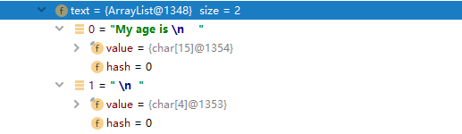

正常来说对XML进行反序列化是比较简单的，而本次需要解析的XML报文是带有具有混合内容的复合类型XML元素，也就是说报文中的某个元素既含有文本也包含其他元素。 类似于如下文本（ageInfo元素）：
1
2
3
4
5
6
| <student>
<ageInfo>My age is
<age>17</age>
</ageInfo>
<name>Kan</name>
</student>
|
决定选择使用JAXB对XML报文进行反序列化。上诉报文对应的实体类如下：
1
2
3
4
5
6
7
8
9
10
11
12
13
14
15
16
17
18
19
20
21
22
23
24
25
26
27
28
29
30
31
32
33
34
35
36
37
38
39
40
41
42
43
44
45
46
47
48
49
50
51
52
53
54
55
56
57
58
59
60
61
62
63
64
65
66
| @XmlRootElement(name = "student")
public class Student {
private String name;
private AgeInfo ageInfo;
public String getName() {
return name;
}
@XmlElement
public void setName(String name) {
this.name = name;
}
public AgeInfo getAgeInfo() {
return ageInfo;
}
@XmlElement
public void setAgeInfo(AgeInfo ageInfo) {
this.ageInfo = ageInfo;
}
@Override
public String toString() {
return new StringJoiner(", ", Student.class.getSimpleName() + "[", "]")
.add("name='" + name + "'")
.add("ageInfo=" + ageInfo)
.toString();
}
public static class AgeInfo {
private List<String> text;
private Integer age;
public List<String> getText() {
return text;
}
@XmlMixed
public void setText(List<String> text) {
this.text = text;
}
public Integer getAge() {
return age;
}
@XmlElement
public void setAge(Integer age) {
this.age = age;
}
@Override
public String toString() {
return new StringJoiner(", ", AgeInfo.class.getSimpleName() + "[", "]")
.add("text=" + text)
.add("age=" + age)
.toString();
}
}
}
|
JAXB对混合内容提供了@XmlMixed注解进行处理，反序列化代码如下：
1
2
3
4
5
6
7
8
9
| Student student;
try {
JAXBContext jaxbContext = JAXBContext.newInstance(Student.class);
Unmarshaller jaxbUnmarshaller = jaxbContext.createUnmarshaller();
student = (Student) jaxbUnmarshaller.unmarshal(new StringReader(XML));
LOGGER.info("\n{}", student.toString());
} catch (JAXBException e) {
LOGGER.warn("解析XML异常：", e);
}
|
JAXB对混合内容元素进行处理，元素中的文本会转为List<String>集合，在本例中，解析后的集合如下：

因元素age分为了两个String。文本内容包括了换行符和空格，如果需要忽略的话可以在反序列化前使用正则表达式对报文进行处理。